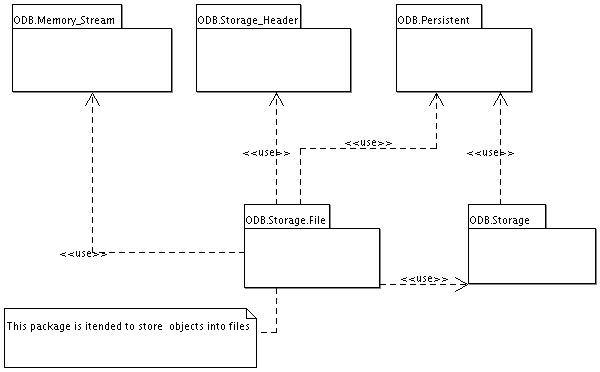

| User's Guide: A Framework for Object Persistency for GNAT; Version 0.6.1; Document Revision $Revision: 1.16 $ | ||
|---|---|---|
| Prev | Next | |
The figure below shows the package structure of the ODB software. The application need to provide at least two packages. One package which contains the persistent class and the application package which uses the persistent class in some sense.

Package Structure of ODB
This package contains the implementation of a storage pool which is used to allocate the memory of persistent objects. Within this package a table is maintained which contains references to all persistent objects ever allocated during the life time of the application.
This package allows to read/write via a stream from/into a memory buffer. Is provides additonaly to the normal stream feature operations which are need to navigate directly in the storage buffer of the stream.
The data stored for each object is based on two parts the so called storage header and the data it self. The data part is handled by the ODB.Storage package. The header information stored in the storage header contains for each attribute of the object an offset in the data storage where the attribute begins. This information is build up during serialization of the object.